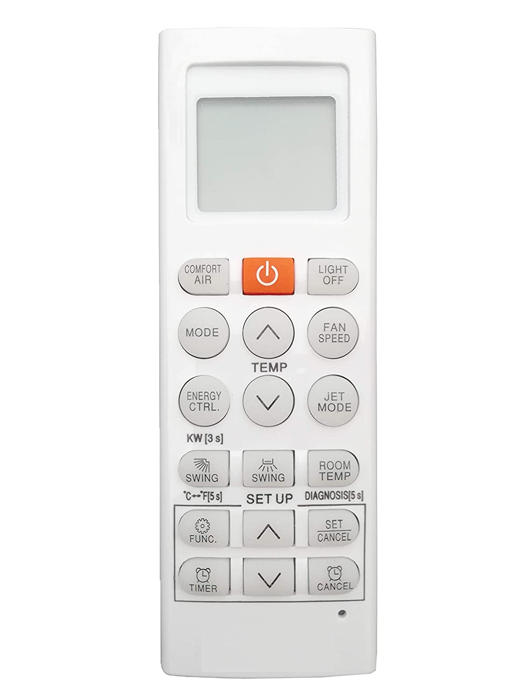
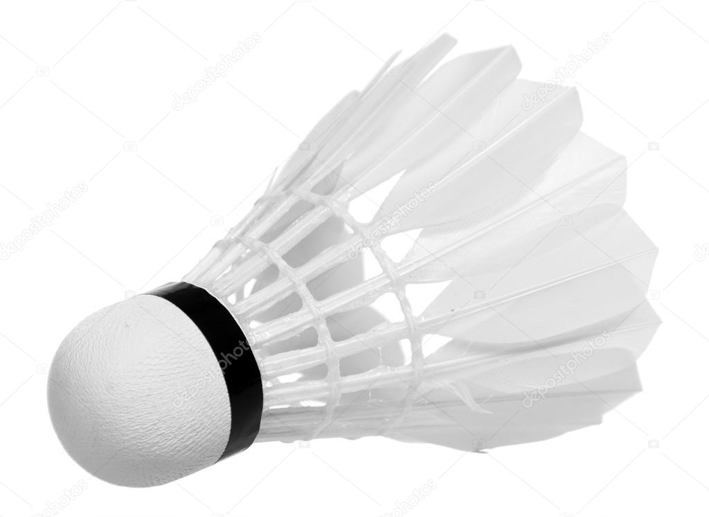

CASE STUDY BETWEEN GOOGLE LENS AND MOBILENET
Google Lens
V/S
Mobilenet
-
Test Image -

Output on Google Lens - Alarm Clock
Output on Mobilenet Model - Time Clock
Result -
Both Have Almost The Same Answer
-
Test Image -

Output on Google Lens - Veggie Burger
Output on Mobilenet Model - Stone
Result -
Google Lens Is More Accurate.
- Test Image -
Output on Google Lens - Flag Of India
Output on Mobilenet Model - Flag
Result -
Both Have Almost Same Answer But Google Lens Is More Accurate.
- Test Image - 
Output on Google Lens - A.C. Remote
Output on Mobilenet Model - Plastic Box
Result -
Google Lens Is More Accurate.
- Test Image - 
Output on Google Lens - Feather Shuttlecock
Output on Mobilenet Model - Hen
Result -
Google Lens Is More Accurate.
I have tested 5 images :
GOOGLE LENS have predicted most of them more accurately.
And MOBILENET was less accurate.
So according to my Case Study GOOGLE LENS is more Accurate.
GOOGLE LENS have predicted most of them more accurately.
And MOBILENET was less accurate.
So according to my Case Study GOOGLE LENS is more Accurate.